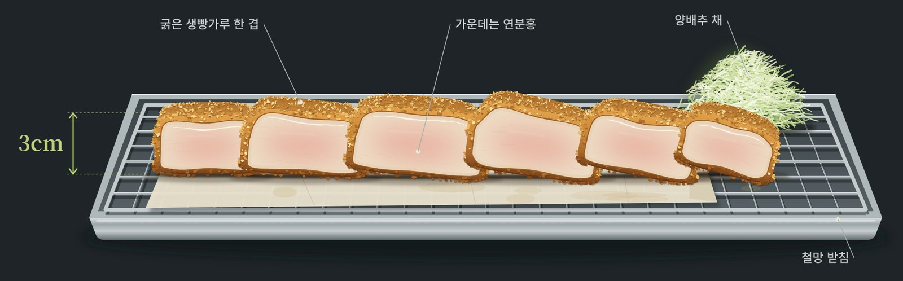

메뉴판 디자인 · SD-MN66
이 디자인으로 상담하기
한겹 돈가스 두께 3cm 등심과 안심을 낮은 온도의 기름에서 오래 튀겨 철망 받침 위에 내는 돈가스 전문점. 강철빛 짙은 바탕 위에 썬 단면이 보이는 등심 돈가스를 크게 그리고, 정식 표는 기름종이 색 한 장에 중량과 가격을 나란히 맞췄습니다.
A4 세로 · 1장 · 한국어 · 원화강철 차콜 · 기름종이 미색 · 양배추 연두철망 위 등심 단면과 3cm 치수선
![한겹 돈가스 메뉴판 전체. 푸른 기가 도는 짙은 강철 차콜색 바탕 왼쪽 위에 등심 · 안심 돈가스라는 작은 줄과 아주 큰 명조체 상호 한겹, 그 옆에 돈가스가 있고, 오른쪽에는 두께 3cm로 썬 등심과 안심에 굵은 생빵가루를 한 겹만 입혀 낮은 온도의 기름에서 오래 튀기고, 철망 위에서 기름을 뺀 뒤 썰어 낸다는 설명이 있습니다. 그 아래 페이지 폭을 가득 채운 그림에는 스테인리스 쟁반 위 격자 철망 받침에 기름 자국이 밴 기름종이가 깔리고, 그 위에 폭과 높이가 조금씩 다른 썬 등심 돈가스 여섯 조각이 오른쪽으로 갈수록 조금씩 더 기울며 서로 겹쳐 기대어 있습니다. 위에서 내려다본 윗면은 잘게 부서진 금갈색 생빵가루 결로 덮여 있고, 앞쪽 단면은 울퉁불퉁한 튀김옷과 바닥의 짙게 튀겨진 테두리 안에 따뜻한 미색 고기가 있으며 가운데만 은은한 분홍빛으로 물들고, 윗가장자리에 가는 흰 지방 선이 보입니다. 조각마다 바닥에 짧은 그림자가 붙어 있습니다. 왼쪽 어두운 바탕에는 첫 조각의 튀김옷 위부터 아래까지를 잇는 연두색 세로 치수선과 3cm 표시가 있고, 굵은 생빵가루 한 겹, 가운데는 연분홍, 양배추 채, 철망 받침이라는 가는 지시선 글씨가 붙어 있으며, 오른쪽 뒤 철망 위에는 연두색과 흰색 채가 느슨하게 쌓인 양배추 채 더미가 있습니다. 그림 아래 세 칸에는 연두색 3cm 등심을 써는 두께, 140→170℃ 두 번에 나눠 올리는 기름 온도, 4분 철망 위에서 쉬었다가 썹니다가 있습니다. 가운데 기름종이 미색 판에는 정식 표가 있고 밥 · 된장국 · 양배추 채 포함, 밥과 양배추는 더 드린다는 안내와 함께 중량과 가격 두 열로, 처음이라면 표시가 붙은 로스카츠 등심 160g 14,000원과 220g 17,500원, 히레카츠 안심 150g 15,500원, 반반 로스 + 히레 170g 16,500원, 치즈카츠 150g 15,000원, 새우카츠 정식 2장 16,000원이 한 줄 설명과 함께 있고, 등심은 하루 정해진 수량만 준비한다는 메모가 있습니다. 아래 짙은 바탕 왼쪽 곁들임에는 멘치카츠 1개 4,000원, 새우튀김 1미 3,500원, 고로케 1개 3,000원, 카레 소스 추가 2,000원, 오른쪽 마실 것에는 생맥주 500ml 5,500원, 하이볼 7,000원, 우롱차 3,000원, 탄산음료 2,500원이 있습니다. 그 아래 조용한 띠에 먹는 법 세 단계가 선 아이콘과 함께 깨를 절구에 곱게 갈고, 소스를 붓고 섞어 찍기, 처음 한 점은 소금만으로 적혀 있고, 맨 아래에 영업 11:30 – 21:00, 브레이크 15:00 – 17:00, 일요일 쉼, 문의 000-0000-0000이 있습니다.](page1.png)

철망 위 여섯 조각윗면의 생빵가루 결 따라 보이는 얇은 지방 선, 가운데 분홍빛까지 그렸습니다
바꿔 드릴 수 있는 것
- 메뉴 이름, 중량, 가격
- 그림 속 돈가스를 안심·치즈카츠 단면으로
- 벽 메뉴판, 테이블 한 장 메뉴, QR 웹메뉴